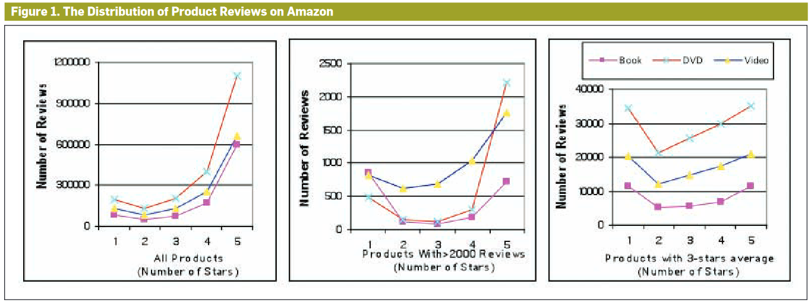
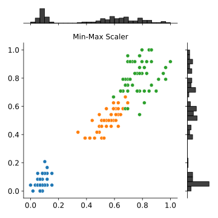
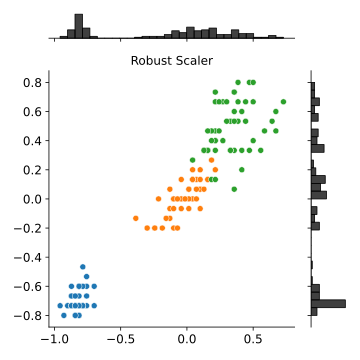
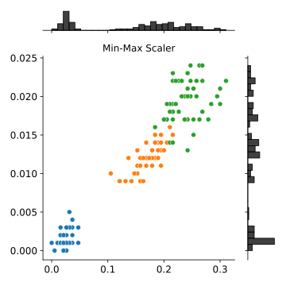
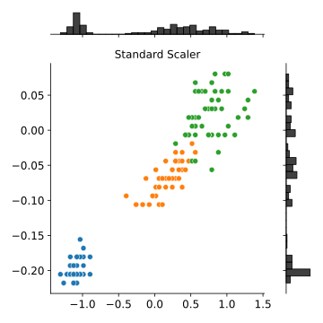
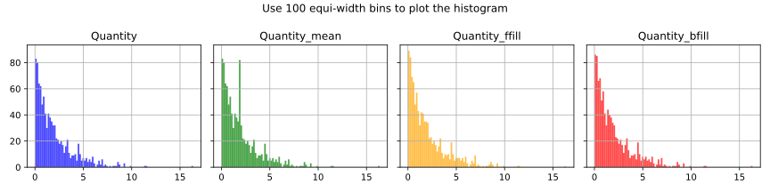
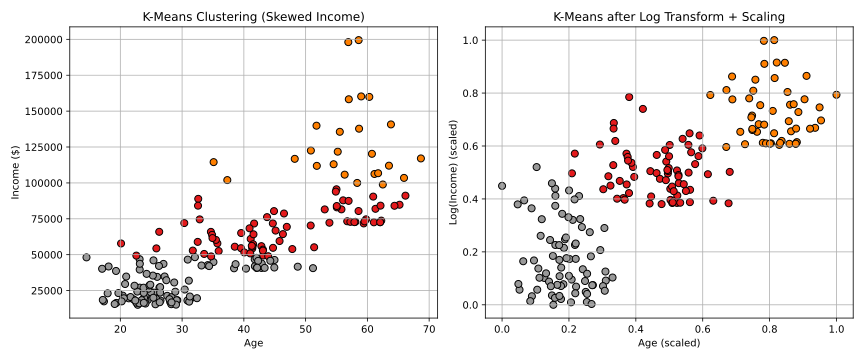

The AI Act is a European Union regulation concerning artificial intelligence that classifies applications by their risk of causing harm.
Unacceptable-risk applications are banned.
Applications that manipulate human behaviour, use real-time remote biometric identification in public spaces, and social scoring (ranking individuals based on their personal characteristics, socio-economic status, or behaviour)
High-risk applications must comply with security, transparency and quality obligations, and undergo conformity assessments.
AI applications that are expected to pose significant threats to health, safety, or the fundamental rights of persons.
They must be evaluated both before they are placed on the market and throughout their life cycle.
Limited-risk applications only have transparency obligations.
AI applications that make it possible to generate or manipulate images, sound, or videos.
Ensure that users are informed that they are interacting with an AI system and are allowed to make informed choices.
Minimal-risk applications are not regulated.
AI systems used for video games or spam filters.
AI Act and Black Mirror
See Black Mirror episodes and how they relate to the AI Act’s high-risk categories:
“The Entire History of You” (Season 1, Episode 3)
People have memory implants that allow them to replay and analyze past events.
“Nosedive” (Season 3, Episode 1)
People’s social credit scores determine their access to housing, jobs, and even flights.
“Hated in the Nation” (Season 3, Episode 6)
A social media campaign with an AI-driven hashtag leads to automated drone assassinations.
“Metalhead” (Season 4, Episode 5)
The episode features relentless autonomous killer robots that hunt down humans.
“Rachel, Jack and Ashley Too” (Season 5, Episode 3) – AI & Digital Manipulation
A pop star’s consciousness is cloned into an AI assistant, and the AI is used to create performances without her consent.
Problem: missing values?
A retail company tracks daily sales, but some records are missing due to system failures.
A telecom company is predicting customer churn, but some customers have missing contract durations or monthly bill values.
A hospital maintains records of patients’ blood pressure, but 15% of entries are missing.
A bank evaluates loan applications, but some applicants have missing income data.
Problem: missing values?
A retail company tracks daily sales, but some records are missing due to system failures.
Use historical sales trends to impute missing values
A telecom company is predicting customer churn, but some customers have missing contract durations or monthly bill values.
Use median imputation for numerical features (e.g., replace missing monthly bill amounts with the median).
A hospital maintains records of patients’ blood pressure, but 15% of entries are missing.
Use K-Nearest Neighbors (KNN) imputation to estimate missing values based on similar patients.
A bank evaluates loan applications, but some applicants have missing income data.
Use group-based imputation (e.g., average income for self-employed individuals).
Imputation of missing values
Imputation is the process of replacing missing data with substituted values.
Listwise deletion (complete case) deletes data with missing values
If data are missing at random, listwise deletion does not add any bias, but it decreases the sample size
Otherwise, listwise deletion will introduce bias because the remaining data are not representative of the original sample
Before cleaning
StoreId
type
sales
S1
1000
S2
supermarket
S3
grocery
100
After cleaning
StoreId
type
sales
S3
grocery
100
Pairwise deletion deletes data when it is missing a variable required for a particular analysis
… but includes that data in analyses for which all required variables are present
Imputation of missing values
Hot-deck imputation: the information donors come from the same dataset as the recipients
One form of hot-deck imputation is called “last observation carried forward”
Sort a dataset according to any number of variables, thus creating an ordered dataset
Finds a missing value and uses the value immediately before the data that is missing to impute the missing value
Before cleaning
StoreId
Date
sales
S1
2024-10-04
1000
S1
2024-10-05
S2
2024-01-04
After cleaning (sort by StoreId and Date)
StoreId
Date
sales
S1
2024-10-04
1000
S1
2024-10-05
1000
S2
2024-01-04
1000
Cold-deck imputation replaces missing values with values from similar data in different datasets
Imputation of missing values
Mean substitution replaces missing values with the mean of that variable for all other cases
Mean imputation attenuates any correlations involving the variable(s) that are imputed
There is no relationship between the imputed variable and any other measured variables.
Mean imputation can be carried out within classes (i.e., categories, such as gender)
Before cleaning
StoreId
Date
sales
S1
2024-10-04
1000
S1
2024-10-05
S1
2024-10-06
2000
S2
2024-10-04
S2
2024-10-05
1000
After cleaning (average by StoreId)
StoreId
Date
sales
S1
2024-10-04
1000
S1
2024-10-05
1500
S1
2024-10-06
2000
S2
2024-10-04
1000
S2
2024-10-05
1000
Case Study: How Do We Impute?
Year
Portfolio Value
2008
1000.00
2009
1050.00
2010
1102.50
2011
1157.63
2012
2013
1276.28
2014
1340.10
2015
1407.10
2016
1477.46
2017
1551.33
2018
2019
1710.34
2020
1795.86
2021
1885.65
2022
1979.93
2023
2024
2182.87
Case Study: Compound Interest
Our portfolio has an initial value \(V_0 = 1000€\) and each has a return of X%
The first year, the portfolio increases its value to \(V_1=1000€ + (1000€ \times X\%) = 1050€\)
The second year, the portfolio increases its value to \(V_2 = V_1 + (V_1 \times X\%) = 1102.50€\)
… and so on.
Year
Value
0
1000.00 €
1
1050.00 €
2
1102.50 €
…
…
18
2406.62 €
This is not a linear increase but a geometric sequence: \(\text{Final value} = \text{Initial value} \times (1 + \frac{r}{n})^\frac{t}{n}\)
\(r\) is the nominal annual interest rate
\(n\) is the compounding frequency (1: annually, 12: monthly, 52: weekly, 365: daily)
\(t\) is the overall length of time the interest is applied (expressed using the same time units as n, usually years).
Members of LTCM’s board of directors included Myron Scholes and Robert C. Merton, who shared the Nobel Prize in Economics
LTCM was initially successful, with annualized returns of around 21% in its first year, 43% in its second year, and 41% in its third year.
In 1998, it lost $4.6 billionin less than four months due to an unlikely combination of (1997) Asian and (1998) Russian financial crises.
(Jorion 2000) […] on 21 August, the portfolio lost $550 million. By 31 August, the portfolio had lost $1,710 million in 1 month.
Using the presumed $45 million daily (or $206 million monthly) standard deviation, this translates into an 8.3 standard deviation event.
Assuming a normal distribution, such an event would occur once every 800 trillion years, or 40,000 times the age of the universe.
Surely this assumption was wrong.
LCTM
Problem: is the dataset ready for machine learning?
An online retailer wants to predict which customers are likely to churn. Instead of using raw purchase data, they need a “Loyalty Score” based on Total purchases in the last 12 months, average order value, and frequency of purchases.
A bank needs to classify customers into risk levels based on their credit score.
Netflix needs to recommend movies based on genre. However, movie genres are categorical (e.g., “Action,” “Comedy”), which must be converted into numbers.
Feature engineering
Feature engineering refers to the manipulation (addition, deletion, combination, mutation) of your data set to improve machine learning model training.
Derived attributes should be added if they ease the modeling algorithm
Area = Length x Width.
Loyalty_Score = Total_Purchases x 0.4 + Avg_Order_Value x 0.3 + Frequency x 0.3.
Encoding may be necessary to transform or symbolic fields (“definitely yes”, “yes”, “don’t know”, “no”) to numeric values
Encoding
Encoding is the process of converting categorical variables into numeric features.
Most machine learning algorithms, like linear regression and support vector machines, require input data to be numeric because they use numerical computations to learn the model.
These algorithms are not inherently capable of interpreting categorical data.
Some implementations of decision tree-based algorithms can directly handle categorical data.
Categorical features can be nominal or ordinal.
Nominal features (e.g., colors) do not have a defined ranking or inherent order.
Ordinal features (e.g., size) have an inherent order or ranking
One hot encoding and ordinal encoding are the most common methods to transform categorical variables into numerical features.
Encoding: ordinal encoding
Ordinal encoding replaces each category with an integer value.
These numbers are, in general, assigned arbitrarily.
Ordinal encoding is a preferred option when the categorical variable has an inherent order.
Before encoding
ProductId
Size
P1
small
P2
medium
P3
large
P4
small
After encoding (small = 0, medium = 1, large = 2)
ProductId
Size
Size_Enc
P1
small
0
P2
medium
1
P3
large
2
P4
small
0
Encoding: Likert scale
The Likert scale is widely used in social work research and is commonly constructed with four to seven points.
[*, **, ***, ****, *****]
[1, 2, 3, 4, 5]
What about averaging?
Encoding: Likert scale
It is usually treated as an interval scale, but strictly speaking, it is an ordinal scale, where arithmetic operations cannot be conducted (Wu and Leung 2017)
Converting responses to a Likert-type question into an average seems an obvious and intuitive step, but it doesn’t necessarily constitute good methodology. One important point is that respondents are often reluctant to express a strong opinion and may distort the results by gravitating to the neutral midpoint response. It also assumes that the emotional distance between mild agreement or disagreement and strong agreement or disagreement is the same, which isn’t necessarily the case. At its most fundamental level, the problem is that the numbers in a Likert scale are not numbers as such, but a means of ranking responses.
Encoding: Likert scale

J-shaped distribution
People tend to write reviews only when they are either extremely satisfied or extremely unsatisfied.
People who feel the product is average might not bother to write a review.
If one of the features has a broad range of values, the distance will be governed by this particular feature.
Consider a dataset with two features age\(\in [0, 120]\) and income\(\in [0, 100000]\)
Given four points
\(p_1=(\)age = 50, income = 10000\()\)
\(p_2=(\)age = 50, income = 20000\()\), \(d(p_1,p_2)=10000.00\)
\(p_3=(\)age = 60, income = 10000\()\), \(d(p_1,p_3)=10.00\)
\(p_4=(\)age = 60, income = 20000\()\), \(d(p_1,p_4)=10000.00\)
Feature scaling (or data normalization)
Feature scaling normalizes the range of independent variables
Min-max normalization rescales the features in \([a, b]\) (tipically \([0, 1]\)): \(x'=a+{\frac{(x-{\text{min}}(x))(b-a)}{{\text{max}}(x)-{\text{min}}(x)}}\)
Standardization makes the values of each feature in the data have zero-mean and unit-variance: \(x'={\frac{x-{\bar {x}}}{\sigma}}\)
Robust scaling is designed to be robust to outliers: \(x'={\frac{x-Q_{2}(x)}{Q_{3}(x)-Q_{1}(x)}}\)
Before min-max normalization
After min-max normalization
Feature scaling
Feature scaling
Original Iris dataset


Transformed Iris dataset: petal_length*=10, addition of 1 outlier [petal_length=100, petal_width=100]


What problems can arise with skewed distributions?
Skewed vs normal distributions
Effects of imputation on skewed distributions?
Long Tail refers to the concept where a large number of niche products collectively generate more sales than a few bestsellers.
E-commerce sites such as Amazon stock a vast array of products that traditional retailers wouldn’t carry due to space constraints.
The Long Tail phenomenon is directly related to skewed distributions, specifically a type of right-skewed distribution

Skewed distributions: what happens to mean values?
Gaussian distribution
Skewed distribution
Skewed distributions: what happens to mean values?
Gaussian distribution
Mean = 173 cm
Median = 173 cm
Skewed distribution
Mean: 103158262914
Median: 36666524821
Skewed distributions
Skewed distributions can be transformed using mathematical functions such as the logarithm.
Skewed distributions

Problem: if the dataset is too detailed/noisy, what can we do?
Some machine learning models can only work with numerical values.
How do we transform the categorical values of the relevant features into numerical ones?
Aggregation and Binning may be necessary to transform ranges to symbolic fields
Before binning
StoreId
Date
sales
S1
2024-10-04
1000
S1
2024-10-05
1500
S1
2024-10-06
2000
After binning (every 1000€)
StoreId
Date
sales
sales_bin
S1
2024-10-04
1000
[1000-2000)
S1
2024-10-05
1500
[1000-2000)
S1
2024-10-06
2000
[2000-3000)
Problem: if the dataset is too detailed/noisy, what can we do?
A meteorologist analyzes hourly temperature readings, but the data has fluctuations due to temporary weather conditions.
Hour
Temperature (°C)
1
24.1
2
24.3
3
23.8
4
24.5
5
22.9 (Sudden drop due to rain)
6
24.2
7
23.9
How can we smooth small variations?
Problem: if the dataset is too detailed/noisy, what can we do?
For instance, using equal-width binning (grouping every 3 hours and averaging):
Time Period
Smoothed Temperature (°C)
1-3 AM
24.0 (Avg of 24.1, 24.3, 23.8)
4-6 AM
23.9 (Avg of 24.5, 22.9, 24.2)
7 AM
23.9
Noise from sudden drops (e.g., 22.9°C at 5 AM) is smoothed, making temperature trends more reliable.
Aggregation
Aggregation computes new values by summarizing information from multiple records and/or tables.
For example, converting a table of product purchases, where there is one record for each purchase, into a new table where there is one record for each store.
Data binning is a data pre-processing technique that reduces the effects of minor observation errors
The original values that fall into a given interval (bin) are replaced by a central value representative of that interval
Histograms are an example of data binning used in order to observe underlying frequency distributions
Equal-width: divide the range of values into equal-sized intervals or bins
For example, if the values range from 0 to 100, and we want 10 bins, each bin will have a width of 10
It can create empty or sparse bins, especially if the data is skewed or has outliers
Equal-frequency: divide the values into bins that have the same number of observations or frequency
For example, if we have 100 observations and we want 10 bins, each bin will have 10 observations
It creates balanced bins that can handle skewed data and outliers better
The disadvantage is that it can distort the distribution of the data and create irregular bin widths
Problem: what if we have too many features?
A streaming platform wants to recommend movies based on user preferences.
Each movie is represented by a vector of features:
Genre
Director
Lead Actor
IMDB Rating
Budget
User Reviews
Box Office Revenue
Soundtrack Style
… and many more (let’s assume 100+ features per movie).
If movies had only 2 features (e.g., Genre and IMDB Rating), we could easily visualize clusters of similar movies.
With 100+ features, the data points are spread out across a vast space.
All points seem “far apart” from each other, making similarity calculations less reliable.
Nearest neighbors are not actually close (because all distances become similar).
Dimensionality reduction
Dimensionality reduction is the transformation of data from a high-dimensional space into a low-dimensional space
Working in high-dimensional spaces can be undesirable for many reasons
Raw data are often sparse as a consequence of the curse of dimensionality
Dimensionality reduction can be used for noise reduction, data visualization, cluster analysis, or to facilitate other analyses
The main approaches can also be divided into feature selection and feature extraction.
Feature selection
Feature selection is the process of selecting a subset of relevant features (variables, predictors) for use in model construction
Dummy algorithm: test each subset of features to find the one that minimizes the error
This is an exhaustive search of the space, and is computationally intractable for all but the smallest of feature sets
If \(S\) is a finite set of features with cardinality \(|S|\), then the number of all the subsets of \(S\) is \(|P(S)| = 2^{|S|} - 1\) (do not consider \(\varnothing\))
With 3 features: \(2^3=8\) subsets
With 4 features: \(2^4=16\) subsets
With 10 features: \(2^{10}=1024\) subsets
Feature selection approaches are characterized by
Search technique for proposing new feature subsets
Evaluation measure for scoring the different feature subsets
Feature selection
Feature selection approaches try to find a subset of the input variables
Filter strategy: select variables regardless of the model
Based only on general features like the correlation with the variable to predict
Wrapper strategy
Methods include forward selection, backward elimination, and exhaustive search
Embedded strategy
Add/remove features while building the model based on prediction errors
A learning algorithm takes advantage of its own variable selection process and performs feature selection and classification simultaneously
Features with low variance do not contribute much information to a model.
Use a variance threshold to remove any features that have little to no variation in their values.
Since variance can only be calculated on numeric values, this method only works on quantitative features.
Before selection
StoreId
sales
PostalCode
1
1000
47522
2
1500
47522
3
1000
47522
Compute variance
\(VAR(\)StoreId\()=0.67\)(?)
\(VAR(\)sales\()=55555.56\)
\(VAR(\)PostalCode\()=0\)
After selection (\(VAR(X) > 0.6\))
StoreId
sales
1
1000
2
1500
3
1000
Feature selection: Filter strategy
Pearson’s correlation: measures the linear relationship between 2 numeric variables
A coefficient close to 1 represents a positive correlation, -1 a negative correlation, and 0 no correlation
Correlation between features:
When two features are highly correlated with one another, then keeping just one to be used in the model will be enough
The second variable would only be redundant and serve to contribute unnecessary noise.
Correlation between feature and target:
If a feature is not very correlated with the target variable, such as having a coefficient of between -0.3 and 0.3, then it may not be very predictive and can potentially be filtered out.
Feature selection: Wrapper strategy
Each new feature subset is used to train a model, which is tested on a hold-out set
Counting the number of mistakes made on that hold-out set (the error rate of the model) gives the score for that subset
As wrapper methods train a new model for each subset, they are very computationally intensive but provide good results
Stepwise regression adds the best feature (or deletes the worst feature) at each round
Backward elimination
Start with the full model (including all features) and then incrementally remove the most insignificant feature.
This process repeats again and again until we have the final set of significant features.
Choose a significance level (e.g., SL = 0.05 with a 95% confidence).
Fit a full model including all the features.
Consider the feature with the highest p-value.
If the p-value < SL, terminate the process.
Remove the feature that is under consideration.
Fit a model without this feature. Repeat the entire process from Step 3.
Feature projection transforms the data from the high-dimensional space to a space of fewer dimensions
The data transformation may be linear, as in principal component analysis (PCA)
… but many nonlinear dimensionality reduction techniques also exist
Principal component analysis (PCA) is a linear dimensionality reduction technique.
PCA aims to preserve as much of the data’s variance as possible in fewer dimensions
Variance measures how much the data points differ from the mean of the dataset
The data is linearly transformed onto a new coordinate system such that the directions (principal components) capturing the largest variation in the data can be easily identified
The first principal component captures the highest variance, the second component captures the second highest, and so on.
Computing PCA
PCA is sensitive to the scale of the data. The first step is usually to standardize the features (mean = 0, standard deviation = 1) to ensure that all features contribute equally to the analysis.
Then, compute the covariance Matrix
Eigenvectors represent the directions of the principal components.
Eigenvalues represent the magnitude of variance in the direction of the corresponding eigenvector.
The eigenvector with the largest eigenvalue is the first principal component, and so on.
PCA on the Iris dataset
Iris contains 4 features; we cannot plot it directly.
petal_length
petal_width
sepal_length
sepal_width
Principal Component
Explained Variance
PC 1
92.46%
PC 2
5.31%
PC 3
1.71%
Feature Relevance for 3 Components:
Feature
PC 1
PC 2
PC 3
Sepal Length (cm)
0.361
0.657
-0.582
Sepal Width (cm)
-0.085
0.730
0.598
Petal Length (cm)
0.857
-0.173
0.076
Petal Width (cm)
0.358
-0.075
0.546
Problem: how do we integrate different data sources?
A hospital wants to analyze patient health records by integrating data from multiple sources, including electronic health records (EHRs), wearable devices, and insurance claims.
Integrate Data
Integration involves combining information from multiple tables or records to create new records or values.
With table-based data, an analyst can join two or more tables that have different information about the same objects.
For instance, a retail chain has one table with information about each store’s general characteristics (e.g., floor space, type of mall), another table with summarized sales data (e.g., profit, percent change in sales from the previous year), and another table with information about the demographics of the surrounding area.
These tables can be merged together into a new table with one record for each store.
StoreId
Type
S1
grocery
S2
supermarket
S3
…
+
StoreId
Sales
S1
1000
S2
1500
S3
…
=
StoreId
Type
Sales
S1
grocery
1000
S2
supermarket
1500
S3
…
…
Data integration
Data integration combines data residing in different sources and provides users with a unified view of them.
Primary key-based integration combines multiple sources based on matching unique identifiers (primary keys).
This method works when both datasets have a well-defined and consistent schema with common key fields.
Semantic integration focuses on understanding the meaning of the data from different sources to combine it effectively.
The goal is to merge data that may use different names, terminologies, or structures to describe the same concepts.
Data is integrated based on semantic meaning rather than structural similarities.
It involves the use of ontologies or data dictionaries to map similar concepts across datasets, ensuring consistency.
It requires understanding the context, meaning, and relationships within the data.
For instance, spatial data can be easily integrated into maps
Semantic Integration vs Primary Key-based Integration
Aspect
Semantic Integration
Primary Key-based Integration
Approach
Based on meaning and understanding of the data.
Based on matching unique keys.
Suitability
Data with heterogeneous terminologies or structures.
Datasets have common, well-defined keys.
Complexity
Complex to interpret and align meanings.
Simpler, relies on exact key matches.
Flexibility
Integrate data with different schemas/representations.
Less flexible, requires shared primary key fields.
Challenges
Requires mapping of concepts and domain semantics.
Limited to datasets that share a key.
Format Data
In some cases, the data analyst will change the format (structure) of the data.
Sometimes these changes are needed to make the data suitable for a specific modeling tool.
In other instances, the changes are needed to pose the necessary data mining questions.
5V’s of Big Data
Examples:
Simple: removing illegal characters from strings or trimming them to a maximum length
More complex: reorganization of the information (e.g., from normalized to flat tables)
Problem: how do we concatenate pre-processing transformations?
Sequences of transformations
Things are even more complex when applying sequences of transformations.
E.g., normalization should be applied before rebalancing since rebalancing can alter average and standard deviations
E.g., applying feature engineering before/after rebalancing produces different results depending on the dataset and algorithm
image
More an art than a science
… At least for now
Final considerations
Overlapping with Business Intelligence and Data Warehousing
ETL (Extract, Transform, Load) is one of the most widely used data integration techniques in data warehousing.
Extract: Pull data from multiple sources (e.g., databases, APIs, flat files).
Transform: Clean, standardize, and transform the data into the desired format.
Load: Load the transformed data into a target database or data warehouse.
ELT (Extract, Load, Transform) loads data into a storage system (like a data lake) and then transforms within the storage system.
Overlapping with Big Data and Cloud Platforms
Data profiling to get metadata summarizing our dataset
Data provenance to track all the transformations that we apply to our dataset
Wooclap
References
Chan, Jireh Yi-Le, Steven Mun Hong Leow, Khean Thye Bea, Wai Khuen Cheng, Seuk Wai Phoong, Zeng-Wei Hong, and Yen-Lin Chen. 2022. “Mitigating the Multicollinearity Problem and Its Machine Learning Approach: A Review.”Mathematics 10 (8): 1283.
Hu, Nan, Jie Zhang, and Paul A Pavlou. 2009. “Overcoming the j-Shaped Distribution of Product Reviews.”Communications of the ACM 52 (10): 144–47.
Jorion, Philippe. 2000. “Risk Management Lessons from Long-Term Capital Management.”European Financial Management 6 (3): 277–300.
Katrutsa, Alexandr, and Vadim Strijov. 2017. “Comprehensive Study of Feature Selection Methods to Solve Multicollinearity Problem According to Evaluation Criteria.”Expert Systems with Applications 76: 1–11.
Liu, Fei Tony, Kai Ming Ting, and Zhi-Hua Zhou. 2008. “Isolation Forest.” In 2008 Eighth Ieee International Conference on Data Mining, 413–22. IEEE.
Shearer, Colin. 2000. “The CRISP-DM Model: The New Blueprint for Data Mining.”Journal of Data Warehousing 5 (4): 13–22.
Taleb, Nassim Nicholas. 2008. The Impact of the Highly Improbable. Penguin Books Limited.
Wu, Huiping, and Shing-On Leung. 2017. “Can Likert Scales Be Treated as Interval Scales?—a Simulation Study.”Journal of Social Service Research 43 (4): 527–32.

 Problem: which data should we use?
Problem: which data should we use?


.svg)
.svg)